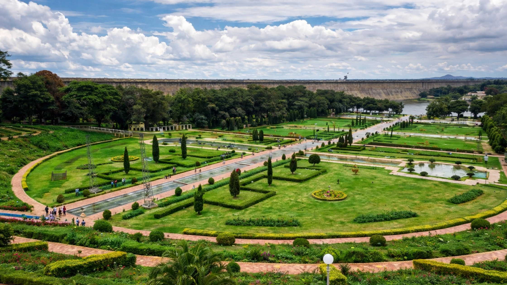

Mysore, also known as Mysuru, is one of the most charming cities in South India. Known for its royal heritage, beautiful palaces, peaceful gardens, and cultural traditions, the city attracts thousands of visitors every year. Travelers come here to explore historical attractions, enjoy local cuisine, and experience the relaxed atmosphere that Mysore offers.
When planning a trip, one of the most important decisions travelers make is choosing where to stay. Selecting the right area can make your trip much more convenient and enjoyable. Mysore has several neighborhoods that are ideal for tourists, offering easy access to attractions, transportation, and local markets.
Many travelers who visit the city often prefer centrally located accommodations such as Maurya Palace, as staying near major attractions helps save travel time and allows visitors to explore the city comfortably. Visitors looking for the best Stay in Mysore usually choose areas that provide both comfort and accessibility.
In this guide, we will explore the best areas to stay in Mysore for tourists and travelers, helping you choose the right location for your trip.
The location of your accommodation plays a major role in your travel experience. Staying in a good area can help you reach tourist attractions easily and avoid long travel times.
Some areas in Mysore are closer to major landmarks such as Mysore Palace, Chamundi Hills, and Mysore Zoo, while others offer a quieter environment perfect for relaxing stays. Travelers should consider their travel style, budget, and itinerary before selecting a place to stay.
A well-located stay allows visitors to explore the city more comfortably and spend more time enjoying attractions rather than traveling long distances.
Lashkar Mohalla is one of the most popular areas for tourists visiting Mysore. This neighborhood is located close to many major attractions, making it a convenient place to stay.
Visitors staying in Lashkar Mohalla can easily reach Mysore Palace, Devaraja Market, and several restaurants and shopping areas. The area is lively and full of local culture, giving travelers a chance to experience the everyday life of Mysore.
The central location also means that transportation options such as taxis, buses, and auto-rickshaws are easily available. For first-time visitors, this area is often considered a practical and comfortable choice.
Nazarbad is another popular neighborhood for tourists in Mysore. It is located near the famous Mysore Zoo and is known for its calm and pleasant surroundings.
This area is ideal for families and travelers who prefer a quieter environment away from busy streets. Nazarbad offers easy access to several attractions while maintaining a peaceful atmosphere.
Visitors staying in Nazarbad can explore nearby gardens, museums, and cultural sites while enjoying a relaxing stay.
Vontikoppal is a residential area that has become increasingly popular among travelers. It is located slightly away from the crowded city center but still offers easy access to important attractions.
This neighborhood is known for its clean surroundings, good restaurants, and peaceful environment. Travelers who want a comfortable stay without too much noise often prefer this area.
Because it is well connected to the rest of the city, visitors staying here can easily reach Mysore Palace, Chamundi Hills, and other tourist destinations.
Gokulam is one of the most unique areas in Mysore. It is famous for its yoga centers, cultural atmosphere, and international visitors.
Many travelers who come to Mysore for yoga and wellness retreats prefer staying in Gokulam. The area has several cafes, small restaurants, and quiet streets that create a relaxed and friendly environment.
Visitors staying here often enjoy walking around the neighborhood and experiencing the cultural diversity of Mysore.
Jayalakshmipuram is a well-developed residential neighborhood that offers a peaceful environment for travelers. The area is known for its tree-lined streets, parks, and comfortable accommodations.
Families and long-stay travelers often choose this area because it provides a calm atmosphere while still being connected to major parts of the city.
It is also close to educational institutions, shopping areas, and restaurants, making it a convenient place for visitors.
Before selecting a place to stay in Mysore, travelers should consider several important factors.
Location
Choose a location that is close to the attractions you plan to visit. This will help you save travel time and transportation costs.
Budget
Different areas offer accommodation options for different budgets. Decide your budget before searching for hotels or guesthouses.
Accessibility
Make sure the location has easy access to transportation such as buses, taxis, or auto-rickshaws.
Nearby Facilities
Check whether restaurants, shops, and medical facilities are available nearby.
Safety and Cleanliness
Always choose accommodation in a safe and well-maintained neighborhood.
One of the advantages of staying in Mysore is that many attractions are located close to each other. Travelers staying in central areas can easily visit several destinations in a single day.
Mysore Palace
The most iconic landmark of the city, Mysore Palace is known for its magnificent architecture and royal history.
Chamundi Hills
Chamundi Hills offers stunning views of the city and is home to the famous Chamundeshwari Temple.
Mysore Zoo
This is one of the oldest and most well-maintained zoos in India, attracting visitors of all ages.
Devaraja Market
A colorful and vibrant market where visitors can buy flowers, spices, fruits, and traditional Mysore products.
Brindavan Gardens
Located near the Krishna Raja Sagar Dam, this garden is famous for its beautiful landscaping and musical fountain show.
Because these attractions are located relatively close to each other, choosing accommodation in a central area makes sightseeing easier.
Travelers visiting Mysore for the first time can follow a few simple tips to make their trip smoother.
These tips can help travelers enjoy their visit without unnecessary stress.
Mysore is often considered one of the most peaceful and culturally rich cities in India. The city offers a perfect combination of historical attractions, natural beauty, and traditional culture.
Visitors can explore grand palaces, ancient temples, lively markets, and scenic gardens all within a short distance. The welcoming atmosphere of the city makes it a favorite destination for both domestic and international travelers.
Because of its hospitality and accommodation options, Mysore is home to some of the Best Hotels in Mysore, making it easy for travelers to find a comfortable place to stay.
Central areas like Lashkar Mohalla and Nazarbad are popular among tourists because they are close to major attractions and transportation options.
Yes, staying near Mysore Palace makes it easier to visit many popular attractions, restaurants, and shopping areas.
Most travelers can explore the main attractions of Mysore comfortably in two to three days.
Yes, Mysore is generally considered a safe and peaceful city for travelers.
Some must-visit attractions include Mysore Palace, Chamundi Hills, Mysore Zoo, Devaraja Market, and Brindavan Gardens.
Choosing the right place to stay can greatly enhance your travel experience in Mysore. Whether you prefer a lively central area or a quiet residential neighborhood, the city offers several great options for travelers.
Areas like Lashkar Mohalla, Nazarbad, Vontikoppal, Gokulam, and Jayalakshmipuram provide convenient access to major attractions while offering comfortable environments for visitors.
Many travelers who want easy access to the city’s landmarks often choose centrally located accommodations such as Maurya Palace, as these places allow visitors to explore Mysore without spending too much time on transportation.
By selecting the right area and planning your itinerary well, you can enjoy a relaxing and memorable trip. With its rich history, beautiful attractions, and welcoming atmosphere, Mysore continues to be one of the most enjoyable travel destinations in South India.